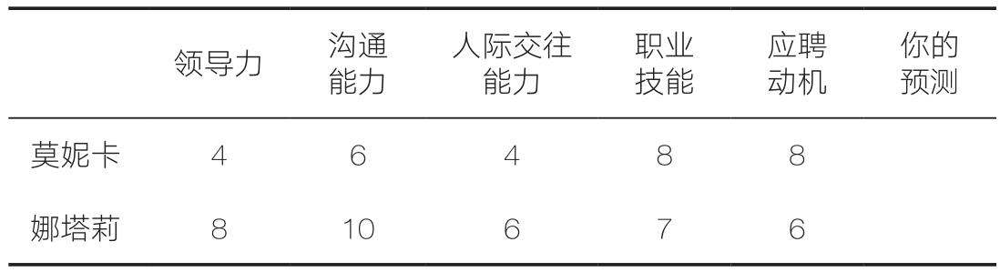

很多人都对预测未来的工作绩效感兴趣，不只是自己的，还有别人的。因此，绩效预测是用来考察预测性判断的实用例子。例如，一家大公司在招聘高管时，聘请了一家专业咨询公司对两名候选人莫妮卡和娜塔莉进行评估，并以取值为1～10分的量表对两人的领导力、沟通能力、人际交往能力、职业技能、应聘动机等维度进行打分（见表9-1）。你的任务是：预测她们在两年后的工作绩效，并用1～10分来评分。
表9-1 两名高管候选人的能力评估得分
大多数人在面对此类问题时，只是简单地盯着每一行数字并心算出平均分，然后快速做出判断。如果你也是这样，那么你可能会得出这一结论：娜塔莉是更优人选，因为莫妮卡的平均分比她差一两分。
针对此问题，你采取的这种方法被称为“诊断性判断”（clinical judgment）。在此过程中，你会考虑相关信息，或许再快速计算一下，然后利用直觉做出判断。事实上，诊断性判断就是我们在这本书中简单描述的判断过程。
现在假设你以实验参与者的身份完成了上述预测工作。莫妮卡和娜塔莉的数据来自一个信息数据库，其中记录了此前聘用的数百名经理的信息，以及这些经理在5个维度上的得分。你可以使用那些评分来预测两人的工作绩效，而现在你还获得了两人的实际工作绩效数据。那么，想一想你对这两人的诊断性判断有多接近她们的实际绩效呢？
这个例子大致来源于一项关于绩效预测的真实研究。如果你曾参加过该项研究，你可能会对自己的预测结果非常不满意。一家国际咨询公司聘请了拥有博士学位的心理学家来做预测，结果发现，预测与绩效评估的相关系数仅为0.15（PC=55%）。也就是说，当他们评估一名候选人优于另一名候选人时，他们所偏爱的候选人最终获得更高绩效的可能性仅为55%，比随机选择的结果高不了多少。显然，这不是一个令人满意的结果。
也许你会认为，预测准确性之所以这么差，是因为评分信息对预测没有用。因此，我们不禁要问：对候选人的评分到底包含了多少有用的预测信息？如何将它们进行整合才能获得与实际表现相关性最高的预测分数？
有一种标准的统计方法可以回答上述问题。在上述研究中使用这种方法，可以使相关系数达到0.3（PC=60%）。结果虽然仍不尽如人意，但至少优于诊断性预测。
这种方法叫作“多元回归”（multiple regression），它是对各种预测因素的平均值进行加权后获得预测分数的方法。多元回归可以找到一组最佳权重，使整合后的预测分数与目标变量之间的相关性最大。最佳权重可以使预测的均方误差最小——这就是最小平方法在统计学中举足轻重的有力证明。你可能认为，与目标变量相关性越密切的预测因素，其权重也应该越大；而无用的预测因素，其权重应该为0。然而事实上，权重也可能是负数，例如候选人乘公交的逃票次数在预测其工作绩效上的权重就可能是负的。
多元回归是一个“机械性预测”（mechanical prediction）的例子。机械性预测种类繁多，从简单规则（如雇用完成高中学业的人）到复杂的人工智能模型不等。“线性回归”（linear regression）模型是最为常见的一种，因此该模型也被称为“判断和决策研究的主力军”。为方便起见，我们将线性回归模型称为“简单模型”（simple models）。
上文提到的莫妮卡和娜塔莉的案例，可以帮助我们对诊断性预测和机械性预测进行比较。二者都具有如下一些简单的结构：
· 用一组预测因素（如案例中对候选人的评分）来预测目标结果（如候选人的工作绩效）。
· 利用人类的判断做出诊断性预测。
· 基于某项规则（如多元回归），使用同一组预测因素来生成机械性预测的结果。
· 比较诊断性预测与机械性预测的整体准确性。
在了解诊断性预测和机械性预测之后，人们往往想知道两者之间的区别，即相比于公式，人类的判断会更优吗？
这个问题早已有人提出过，但是直到1954年，明尼苏达大学心理学教授保罗·梅尔（Paul Meehl）出版了《临床与统计预测：理论分析和证据综述》（Clinical Versus Statistical Prediction: A Theoretical Analysis and a Review of the Evidence）一书后，该问题才引起了人们的广泛关注。梅尔回顾了20项研究，并根据一系列研究结果（如学业成就和精神病预后效果）分析了诊断性判断和机械性判断的优劣。他得出了一个强有力的结论：简单的机械性规则普遍优于人类的判断。梅尔发现，临床医生和其他专业人员在整合信息的能力上表现极差，虽然他们自认为在这方面具有优势。
为了更好地理解上述发现为何如此令人惊讶，以及它与噪声的关系，我们需要明白简单的机械性预测模型是如何工作的。机械性预测最关键的特征是：它的预测规则适用于所有情况。每个预测因素都有特定的权重，这个权重不会因个案的不同而发生变化。你可能会认为，这种严格的约束会使模型比不上人类的判断，比如，在上文的例子里，也许你会认为莫妮卡的应聘动机和职业技能相结合是一项重要优势，能弥补她在其他方面的不足；也许你还认为，考虑到娜塔莉的其他长处，她在这两方面的劣势没什么大不了。也就是说，你会不由自主地设想她们两人不同的成功途径。凭借这些看似合理的诊断性推测，你针对两人的情况，对不同的预测因素赋予了不同的权重，而简单模型不存在这样的问题。
简单模型的另一个限制是，预测因素每增加1个单位，总是会产生相同大小的效果，即如果增加2个单位，那么所产生的效果是前者的2倍，而诊断性直觉经常与这一原则相悖。例如，娜塔莉的沟通能力是满分10分，如果你对此印象深刻，认为此分数值得你提高对其沟通能力的预测权重，那么你所做的就是简单模型所不能做到的。在加权平均公式中，得分10和9之间的差异与得分7和6之间的差异是相同的，但诊断性判断往往不遵循这一原则，相反，它反映了一种普遍性的直觉，即相同的差异在一种情况下可能无关紧要，在另一种情况下却可能非常重要。因此，我们认为没有哪个简单模型可以完整地描述你对莫妮卡和娜塔莉所做出的判断。
本文使用的例子就是梅尔模式的一个典型案例。正如我们所指出的那样，诊断性预测与工作绩效之间的相关系数仅为0.15（PC=55%），而机械性预测获得的相关系数为0.3（PC=60%）。再回忆一下你在莫妮卡和娜塔莉的例子中对她们的优点所持有的信心。梅尔的结果强烈表明，你对自己判断品质的满意感只是一种错觉，即“效度错觉”（illusion of validity）。
人们做出预测性判断时总会出现效度错觉，因为我们无法区分预测性任务的两个不同阶段：对当前证据的评估阶段和对实际结果的预测阶段。如果要评估两名候选人哪个看起来更好，你通常会充满信心，但是这跟猜测哪名候选人实际上更好完全是两码事。比如，你可以胸有成竹地说“娜塔莉看起来是比莫妮卡更优秀的候选人”，但是，如果要断言娜塔莉将成为一位比莫妮卡更成功的经理，则要冒很大的风险，原因很明显：评估两名候选人所需要的大部分信息你都是知道的，但要想预测未来，就存在很大的不确定性。
然而，我们的思维对上述差别的感受是模糊不清的，事实上，几乎每个人都对二者的差别感到困惑。但是，如果你做出预测时表现出的自信与你进行案例评估时一样，那么你就产生了效度错觉。
即使是临床医生也无法避免效度错觉。梅尔的研究发现，最简单的公式，只要持续应用，竟然可以胜过医学专家的临床判断。你肯定能想象到临床心理学家对此做何反应，他们会感到震惊、怀疑，甚至会鄙视这种对神奇的临床直觉假装进行的肤浅研究。这种反应很容易理解，梅尔的发现与人类判断的主观经验相矛盾，大多数人都更相信自己的经验而非学者的主张。
梅尔本人对自己的发现也持模棱两可的态度，因为一提到他的名字，我们就会想起“统计优于诊断性判断”这一论断，我们可能把他想象成人类洞察力的无情批判者，或者是“量化分析之父”，但事实并非如此。梅尔不仅是一位学术研究人员，还是一位有着丰富临床经验的精神分析师，他的办公室里挂着心理学家弗洛伊德的照片。同时，他也是一个多才多艺的人，不仅教授心理学课程，还教授哲学和法律学课程，他还撰写了一些有关形而上学、宗教学、政治学甚至超心理学（parapsychology）的文章。这些特征都不符合一个刻薄的数据狂人的形象。梅尔对临床医生并没有恶意，但是正如他所说，存在“大量且一致”的证据表明：采用机械性的方法来整合意见会更具优势。
“大量且一致”是个不偏不倚的表述。一篇发表于2000年的论文对136项研究进行了回顾，清晰地表明机械性整合确实优于诊断性判断。这篇论文涵盖的研究主题广泛，包括对黄疸的诊断、军人的身体素质测评和婚姻满意度调查等，其中，63项研究表明机械性预测更准确；65项研究表明两者难分伯仲；8项研究表明诊断性预测更好。以上结果可能还低估了机械性预测的优势，因为机械性预测比诊断性预测速度更快、成本更低。此外，在许多此类研究中，人类在判断时还具有不对等的优势，因为他们可以获取未提供给计算机模型的“私人”信息。这些发现都支持了一个显而易见的结论：简单模型的决策优于人类判断。
梅尔的发现引出了一些重要的问题：公式到底为什么会更优？模型在哪些方面可以做得更好？事实上，一个更好的问题是：为什么人类做出的判断很差？答案是：人类在许多方面都不如统计模型，其中一个主要弱点在于人类的判断过程存在噪声。
为了支持这一结论，我们来看另一项关于简单模型的研究，该研究始于美国俄勒冈州的小城市尤金（Eugene）。保罗·霍夫曼（Paul Hoffman）是一位富有且有远见的心理学家，他对当时的学术环境颇为不满，因此，他成立了一家研究所，招募了一批非常得力的研究人员，这使尤金市成为著名的人类判断行为研究重镇。
其中有一位名叫刘易斯·戈德堡（Lewis Goldberg）的研究人员，他因在“大五人格模型”的基础上发展出了“领导力角色模型”而闻名于世。在20世纪60年代后期，戈德堡基于霍夫曼的早期工作，开始研究用于描述个体判断行为的统计模型。
建立这样一个判断模型和建立一个“现实模型”（model of reality）一样简单，因为两者所使用的预测因素完全相同。与我们最初的例子一样，预测因素是高管在工作绩效的5个维度上的得分，使用的工具也是多元回归。不同的是，该公式并非用于预测候选人的实际绩效，而是用于预测人的判断，比如你对莫妮卡、娜塔莉和其他高管候选人的判断。
用加权平均的方式对你的判断进行建模，可能看起来有些奇怪，因为你的判断并不是这样形成的。当你评价莫妮卡和娜塔莉的工作绩效时，你并没有采用这种规则，事实上，你可能没有采用任何规则。总之，判断模型并非描述实际判断过程的模型。
然而，即使你在实际判断过程中并未基于线性公式去运算，你的判断结果仍可能像是使用了线性公式一般。比如，台球专家们在描述某一杆如何进球时，表现得就好像他们解开了复杂的方程一样，然而实际上他们并未真的那样做。同理，你做出的预测就好像使用了简单公式一样，然而实际上你所做的要复杂得多。对于一个假设模型来说，即使它对过程的描述存在明显的错误，但只要该模型可以合理准确地预测人们的行为，那么它也是很有用的。简单模型就是这样的假设模型。一项针对判断研究的报告全面回顾了237项研究，发现判断模型和诊断性判断的平均相关系数为0.8（PC=79%），尽管不是完全相关，但这种相关性已经足以支持所谓的“假设”理论了。
戈德堡的研究想要解决的问题是：简单的判断模型预测实际结果的效果究竟如何？由于该模型只是对判断者的一个粗略的模拟，因此我们可以合理地假定它的预测效果不佳。那么，用模型替代判断者时，会损失多少准确性呢？答案可能会让你大吃一惊。当我们依据模型做出预测时，预测的准确性并没有降低，相反，在大多数情况下，判断模型反而表现更优，该模型甚至优于专业人士的预测。我们或许可以这样来理解：替代品竟然比真品更好用。
这一结论已被许多领域的研究所证实。早期一项关于预测学生毕业成绩的研究证实了戈德堡的结论。研究人员要求98名参与者基于10条线索预测90名学生的GPA。研究人员根据这些预测，为每名参与者做出的判断建立了一个线性模型，并比较了参与者本人和模型预测的准确性。结果发现，对于这98名参与者来说，模型都比他们本人的预测更准确！几十年后，一项对近50年研究成果的综述性研究也得出了同样的结论：判断模型的表现一如既往地胜过判断者本人。
我们不知道这些研究中的参与者是否收到了有关个人表现的反馈，但是，如果有人告诉你，对你的判断进行粗略建模后的模型实际上比你本人预测得更准确（这极具讽刺性），想必你会感到非常沮丧。对于大多数人来说，判断活动是复杂、丰富且有趣的，这也恰恰是因为它不符合简单规则。当我们发明并应用一些复杂规则来做判断或对某些案例有了不同于其他案例的见解时，即当我们做出了无法用简单的加权求和模型去简化的判断时，我们会自我感觉更加良好，对自己的判断能力更加信心十足。但关于判断模型的研究进一步证实了梅尔的结论——很多细节都是无用的，复杂性和丰富性并不会使预测更准确。
为什么会这样呢？要了解戈德堡的发现，我们需要了解是什么导致你的实际判断与预测这些判断的简单模型之间有了差异。
基于你的判断建立起来的统计模型，不可能将所有用于判断的信息都纳入其中，模型能做的只是抽象和简化。尤其是，你的简单模型不会将你一直遵循的任何复杂规则表征出来。比如，你可能会认为沟通能力评分为10分和9分之间的差别要比7分和6分之间的差别更大，或认为在所有维度上得分均为7分的候选人比平均分相同但优势和劣势都更加明显的候选人更优秀，然而你的模型并不会表征这些复杂规则，即使你经常使用这些规则。
如果你的复杂规则行之有效，那么简单模型会因为不能重复你的规则而导致自身的预测力下降。例如，假设你必须从一个人的技能和动机两个方面来预测他成功完成一项困难任务的可能性，那么加权平均并非好方法，因为动机再强，也无法弥补能力的不足，反之亦然。如果你使用复杂的预测规则，那么你的预测准确性将比无法获取复杂规则的简单模型更高。但复杂规则通常只会给你带来效度错觉，这实际上会降低你的判断品质。也就是说，少数复杂规则是有效的，但大多数是无效的。
此外，你的简单模型并不会表征你在判断中的噪声，它不能重现你在特定案例中由于随机反应而产生的正误差或负误差。同理，你在做出特定判断时会受到当时的环境和心理状态的影响，而模型并不会。这些判断的噪声带来的误差很可能与任何事物都不相关，这意味着在大多数情况下，我们可以将其视为随机误差。
从你的判断中消除噪声通常会提高你的预测准确性。例如，假设你的预测与结果的相关系数是0.5（PC=67%），此时你的判断中包含了50%由噪声导致的变异，而如果你的判断没有噪声，那么它们与结果的相关系数将提升至0.71（PC=75%）。由此可见，用机器减少噪声可以提高预测判断的有效性。
简而言之，用模型代替人类的判断意味着两件事：消除了人类的复杂规则，消除了噪声。判断模型比判断更有效这一强有力的发现说明：从人类判断的复杂规则中获得的好处（如果存在的话）不足以补偿噪声所带来的损失。你可能会认为自己比一般人更擅长思考、更有洞察力，但实际上只是你的噪声更多而已。
为什么我们以为复杂的规则更有效，实际上它们却损害了判断的准确性呢？一方面，人们发明的许多复杂规则并不正确；另一方面，即使复杂规则在原则上是有效的，它们也不可避免地仅适用于少数能被观察到的情况。例如，假设你已经得出结论：对于一个独创性极高的候选人，即使他在其他方面得分一般，也值得被雇用。可问题在于，从定义上看，具有独创性的候选人总是很稀缺。既然对独创性的评估可能不可靠，在这一指标上得了高分的人就可能是侥幸，而真正具有独创性的人才往往无法被发现。即使在绩效评估中具有较高独创性的候选人最终真的表现得特别优秀，绩效评估本身也存在很多问题。两端的测量误差会不可避免地削弱预测的有效性，一些小概率事件尤其可能被忽略，复杂模型的优势很快就会被测量误差所掩盖。
马丁·于（Martin Yu）和内森·昆塞尔（Nathan Kuncel）报告了一项比戈德堡所做的更激进的研究。该研究基于莫妮卡和娜塔莉的案例，使用了一家跨国咨询公司的数据，这家跨国咨询公司聘请专家评估了3个独立样本中共847名高管职位的候选人。专家们在7个不同的评估维度上对这些候选人进行了评分，并使用他们的诊断性判断为每位候选人生成了一个预测总分，然而结果令人大吃一惊。
马丁·于和昆塞尔将判断结果与随机线性模型进行比较，而非与他们的最佳简单模型进行比较。他们为7个预测因素生成了10 000套随机权重，并应用了这10 000个随机公式来预测工作绩效。他们吃惊地发现，用任何线性模型来对所有案例进行预测，其结果均优于人类基于相同信息所做出的判断。在其中一个样本中，10 000个随机加权线性模型中有77%优于人类专家；在另外两个样本中，随机模型100%胜过人类专家。换句话说，该研究表明，所有简单模型的表现都比人类专家好。
这项研究得出的结论比我们从戈德堡的判断模型中得出的结论更有力。事实上，这是个非常极端的例子。在这种情况下，人类的判断确实非常糟糕，这就解释了为什么即使是不尽如人意的线性模型，其表现也超越了人类判断。当然，我们并不能因此下结论说机器绝对比人强，尽管如此，机械地遵守简单规则（马丁·于和昆塞尔称其为“无意识的一致性”（mindless consistency））可以显著提高针对困难问题所做判断的品质，这一事实说明了噪声对诊断性预测的巨大影响。
本章简要地说明了噪声对诊断性判断造成的负面影响。在预测性判断中，人类专家很容易被简单的公式所击败，其中包括真实模型、判断模型甚至随机生成的模型。这一发现支持我们使用无噪声的方法——规则和算法，这也是下一章的主题。